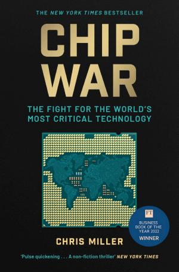

2.3.3 — Videogiochi e creatività
I videogiochi sono il laboratorio cognitivo più sottovalutato del pianeta. Non è un caso che il fondatore di DeepMind, Demis Hassabis — premio Nobel per la chimica 2024 grazie ad AlphaFold — sia un ex campione mondiale di scacchi junior e un game designer. I videogiochi insegnano a simulare, a perdere, a iterare (🕹️ ff.132.2 I benefici dei videogiochi). Lezioni sugli agenti AI emergono persino da Claude che gioca a Pokemon[1] — i giochi come banco di prova per il comportamento autonomo. Genie 3 di DeepMind genera mondi interattivi 3D da un singolo prompt testuale — il proprio mondo si crea giocandoci (📐 ff.132.3 Misurare e modellare il mondo). Fortnite fa anche da piattaforma sociale, sala concerti e negozio. Il videogioco è il medium definitivo perché integra tutti gli altri.
Quando un mondo giocabile nasce da un prompt, il mercato lo sconta in un pomeriggio. Al lancio di Genie — il modello che trasforma una frase in un mondo navigabile — i titoli dei publisher di videogiochi sono crollati del 10-21% in una seduta, mentre Oracle valutava tagli per 30.000 posti[24]. Il mercato sta scontando la possibilità concreta che l’asset più costoso di un publisher — il mondo di gioco — diventi una commodity generabile a comando. La logica vale anche fuori dal gaming: Gemini 3, primo modello davvero multimodale, genera da una descrizione lunga meno di un tweet app che integrano fotocamera, immagini, search e voce — un furetto nutrizionista che analizza un piatto da una foto. Il software smette di essere artefatto e diventa output, e l’intera filiera creativa va riprezzata: lo stesso spavento che attraversa Hollywood, ora che metà degli incassi è già legata a personaggi non-umani (🙅 ff.112.2 Non possiamo prevedere nulla). Resta da contare quanti settori sono a un solo demo dalla loro riprezzatura (🍫 ff.139.3 Dov’è la mia macchina volante (in GTA 6?)).
Il legame tra videogiochi e intelligenza artificiale affonda le radici in una partita leggendaria. Nel 1996 Garry Kasparov, campione del mondo di scacchi, venne sconfitto da Deep Blue. Le sue parole, dopo la partita, suonano profetiche: “ho potuto annusare un nuovo tipo di intelligenza, un tipo di intelligenza molto strano, inefficiente e inflessibile”. Strano e inflessibile: nel 1996 il computer era una forza bruta che macinava milioni di posizioni al secondo, senza eleganza né intuizione. Poi, venticinque anni dopo, i network neurali artificiali hanno mostrato una flessibilità ben maggiore. AlphaGo ha battuto il campione del mondo di Go, Ke Jie, compiendo una mossa — la celebre “mossa 37” — che non seguiva meccanicamente la prassi di millenni di teoria del gioco: era una mossa creativa. La differenza tra Deep Blue e AlphaGo è la stessa differenza tra un calcolatore e un pensatore: il primo vince per esaustione, il secondo per intuizione statistica. E la storia non si è fermata: AlphaZero, allenato senza partite umane — giocando esclusivamente contro se stesso, da zero — ha battuto AlphaGo. L’AI che impara dagli umani è stata superata dall’AI che impara da sé. Demis Hassabis, fondatore di DeepMind e premio Nobel per la chimica, ha costruito su questa traiettoria la sua intera carriera: dagli scacchi alle proteine, dal gioco alla scienza (♟️ ff.18.4 Chess(i) artistici: il re degli scacchi).
Dalla scacchiera il laboratorio si è spostato nei mondi aperti, e il preferito è Minecraft. A novembre 2023 un gruppo di ricercatori ha presentato JARVIS-1, un agente che con un modello linguistico multimodale porta a termine compiti di ogni tipo, pianifica e migliora da solo mentre gioca a Minecraft[26]: «chi l’avrebbe detto che Minecraft sarebbe stato la culla degli agenti AI?», commentava Rowan Cheung. Sei mesi dopo l’AI è passata a fare da allenatore: con GPT-4o, multimodale in entrata e in uscita, Microsoft Copilot guarda lo schermo condiviso e allena in tempo reale chi gioca a Minecraft[27], mentre gli si parla. Intanto DreamerV3 di DeepMind, senza conoscere le regole e senza aver mai visto giocare nessuno, in 100 milioni di passi ha imparato a rompere alberi, costruire bastoni e migliorare picconi, fino al primo blocco di diamante (💎 ff.123.2 Minecraft oltre l’uomo).
Google, l'azienda più potente del mondo digitale, è vulnerabile per la prima volta in 25 anni. Il 50% del suo fatturato proviene dalla ricerca testuale — un format che ChatGPT, Perplexity e gli AI assistants stanno erodendo. Ma oltre a Search Google ha DeepMind (Nobel), TPU v7, Gemini 3, Waymo, YouTube. Resta da capire quale Google sopravviverà (🔍 ff.28.3 Google Maps riduce le emissioni). Andy Grove, sopravvissuto ai campi di sterminio, salvò Intel dalla competizione giapponese nel 1985 con un pivot strategico dai chip di memoria ai processori. “La paranoia fomentata dalla gioventù tra guerra e nazismo ha salvato Intel,” scrive in Only the Paranoid Survive. Time lo elesse Man of the Year nel 1997 (🔯 ff.126.1 Da campi di sterminio a Intel).
“La tecnologia è la risorsa definitiva. Con abbastanza tecnologia, possiamo sostenere 50 miliardi di persone su questo pianeta.”
— Marc Andreessen, The Techno-Optimist Manifesto
Il campo di battaglia più caldo della tech è il silicio stesso. La guerra dei chip tra USA e Cina ha trasformato TSMC (Taiwan) nell'azienda più strategica del pianeta: produce il 92% dei chip sotto i 7 nanometri[2]. Un blocco di Taiwan fermerebbe l'industria globale. Huawei ha lanciato il Mate 60 Pro con un chip a 7nm fatto in casa, sorprendendo l'intelligence americana (🥶 ff.82.3 Guerra fredda). CATL, il colosso cinese delle batterie, ha speso 2,6 miliardi di dollari in R&D[3], triplicando l'investimento del principale concorrente non cinese — consolidando una leadership che nel capitolo Natura ricorre come fattore chiave della transizione energetica (⛏️ ff.42.1 Minerali preziosi?). Il quantum computing aggiunge un'altra dimensione: Sycamore-70 di Google ha dimostrato la supremazia quantistica risolvendo in 200 secondi un calcolo che richiederebbe 10.000 anni a un supercomputer classico (🐱 ff.69.1 Dal gatto di Schrödinger ai qu-bit). Il caso più eloquente è Shenzhen: una città che quarant'anni fa non esisteva e oggi produce droni, auto volanti e infrastrutture di rete a una velocità che rende la pianificazione occidentale quasi ornamentale (🏮 ff.125.3 Cina: il prossimo impero mondiale?).
La guerra dei chip ha un fronte preciso: le macchine litografiche a ultravioletti estremi, le EUV, che incidono sul silicio circuiti migliaia di volte più sottili di un capello. Finora le sapeva costruire solo l’olandese ASML, a circa 250 milioni di dollari l’una, e nessuna è mai stata venduta a un cliente cinese: l’embargo su chip e macchine ASML è in atto da tempo (🥶 ff.82.3 Guerra fredda). A dicembre 2025 Reuters ha rivelato che in un laboratorio ad alta sicurezza di Shenzhen un gruppo di ex ingegneri ASML ne ha ricostruito un prototipo[29], completato all’inizio del 2025: occupa quasi un intero piano di fabbrica e genera già la luce EUV, ma non ha ancora prodotto chip funzionanti. Il governo punta ad averli nel 2028, chi lavora al progetto dice 2030. Ad ASML erano serviti quasi vent’anni, dal primo prototipo del 2001 ai primi chip commerciali del 2019. A coordinare la rete di aziende e istituti, con migliaia di ingegneri, è Huawei, e le fonti lo chiamano il Progetto Manhattan cinese.
Tesla non è solo auto: con tre GWh di capacità — il venticinque per cento del totale mondiale — controlla una porzione significativa del potenziale di immagazzinamento di energia elettrica del pianeta. L’obiettivo dichiarato è raggiungere millecinquecento GWh entro il 2030, un balzo di cinquecento volte. Per arrivarci servirà molto litio, che poi andrà smaltito: l’anno scorso, 17,6 GWh di batterie elettriche sono giunte a fine vita. In quindici anni, quel volume sarà dieci volte tanto — l’equivalente di circa duecento piscine olimpiche, considerando soltanto i veicoli elettrici (🔋 ff.5.2 Duracell? No, Tesla).
Se le biciclette elettriche rappresentano la prossima frontiera della mobilità urbana, VanMoof ne è la Tesla su due ruote. Il modello V prometteva di raggiungere i cinquanta chilometri orari a un prezzo di tremilacinquecento euro: una proposta che univa design olandese e ambizione tecnologica, collocandosi nel punto esatto in cui il trasporto individuale incontra l’elettrificazione diffusa (😎 ff.5.4 La Tesla delle biciclette).
Tesla incarna tutte le contraddizioni dell'era tecnologica. L'azienda ha accelerato la transizione elettrica più di qualsiasi politica governativa, ma la sua valutazione è più una scommessa su Musk che un riflesso dei fondamentali. Tesla ha registrato il peggior calo trimestrale delle vendite in 10 anni[4], eppure il titolo è scambiato a 180 volte gli utili[5]. Nel 2024, BYD l'ha superata per vendite globali di veicoli elettrici. L'arte, infine, non è immune alla rivoluzione. DALL-E, apparso nel 2022, ha generato un'esplosione creativa: il numero di opere digitali pubblicate è cresciuto del 300%[6]. L'AI non ha sostituito gli artisti — li ha democratizzati (👨🏫 ff.30.1 DALL-E: una breve introduzione).
L’estetica generativa, però, non si esaurisce nel feed di Midjourney o nei poster Pokémon. Su Instagram, An Improbable Future[19] usa le stesse tecniche per produrre oggetti che incrociano mondo analogico, futuro fortissimo e design improbabile: macchine fotografiche degli anni Settanta che diventano cabine telefoniche cyberpunk, sedie da ufficio che assomigliano a navette spaziali, accendini in stile Bauhaus marziano. Vale la pena ricordare la regola sottintesa: queste immagini nascono dalla sola descrizione testuale di ciò che l’artista vuole vedere, comprensiva dello stile simil-rendering. Non c’è modello 3D, non c’è render farm, non c’è foto. C’è un prompt e un modello che ricuce milioni di immagini in una geometria mai vista ma immediatamente riconoscibile. Il design industriale, che per un secolo è stato vincolato dalla fattibilità produttiva, scopre un iperuranio dove gli oggetti possono esistere prima di essere costruibili — spesso senza dover esserlo mai. Il salto rispetto al primo DALL-E del 2022 è chiaro: oltre all’arte 2D, si possono anticipare prodotti, packaging, scenografie, copertine di album in un mondo parallelo dove la pipeline classica «brief → concept → render → prototipo» collassa nel singolo gesto del prompt (👨🏫 ff.30.1 DALL-E: una breve introduzione). La continuità con i Pokémon filosofici di Stable Diffusion è piena: stessa diffusione latente, stessa logica di campionamento, applicate però al territorio degli oggetti reali invece che ai personaggi pop (💭 ff.40.1 Gotta catch ‘em all). E quando lo stesso pattern entra nel video — quel continuous dreaming di cui sopra — lo stack creativo si chiude: testo → immagine → oggetto → sequenza animata, tutto in un unico modello (🍄 ff.63.2 Video allucinogeni). Resta una domanda industriale concreta: cosa succede al ciclo di vita di un prodotto quando il prototipo visivo costa meno della mail che lo richiede? La fabbrica del design improbabile è già attiva — il problema è capire quali di questi oggetti vorremo davvero costruire.
E mentre l’AI democratizza la creazione, il mercato degli oggetti originali contrattacca con la firma. Alabama Booksmith, piccola libreria di Birmingham, ha costruito un modello di business che Amazon non può replicare: vende esclusivamente libri autografati dall’autore — allo stesso prezzo di copertina delle copie standard. I clienti vanno in coda per ordinare a distanza: non pagano la firma, pagano il fatto che la firma non sia riproducibile. È il contraltare perfetto della generazione automatica: quando il prodotto standard diventa infinito e gratuito, il premio di scarsità si sposta sull’unicità del gesto umano. Il colosso dell’automazione, nato proprio per sostituire le librerie, si è dimenticato del lato umano della transazione. Lo stesso pattern si vede nei media: Substack ha superato il traffico di importanti redazioni storiche[7] — perché il lettore vuole sapere chi sta scrivendo. La voce individuale torna al centro dopo trent’anni di piattaforme aggregatrici. Nell’economia dell’abbondanza generativa, l’autore firmato è il nuovo bene di lusso: non si compra il testo, si compra l’umanità inequivocabile dietro al testo (🖊️ ff.148.5 Ci metto una firma).
E mentre la firma umana diventa bene di lusso, l’immaginario di massa scopre che il primo trailer cinematografico interamente generato da MidJourney era già una realtà: nel 2023 un montaggio virale ha sovrapposto Barbie e Oppenheimer in un finto franchise «Barbenheimer», dopo che la doppia uscita reale aveva segnato il record d’incassi dell’estate[22]. Tre anni dopo, Ethan Mollick ha portato l’esperimento al limite: la stessa lontra che usa il Wi-Fi in aereo è stata declinata da Sora 2 in nature documentary, thriller, sci-fi anni Cinquanta, film noir, anime e arthouse francese[23] — nove stili cinematografici da un singolo prompt. La progressione è eloquente: dal poster Pokémon di Stable Diffusion al frame mosso di MidJourney, fino al video coerente di Sora 2 nel giro di trentasei mesi. Quel continuous dreaming teorizzato in 🍄 ff.63.2 Video allucinogeni diventa il punto di partenza della pipeline. Resta da vedere quando una major studio diffonderà il primo lungometraggio dichiaratamente generativo — e se il box office si accorgerà di stare guardando l’output di un modello, oppure smetterà di chiedere (🎀 ff.71.4 Barbenheimer è realtà!).
Dalle immagini ai video il passo è stato breve. Matt Wolfe ha mostrato come lo styling generativo si estenda ai video[8]: quel “continuous dreaming” dell’intelligenza artificiale a cui siamo ormai abituati è, ogni volta, un vero trip mentale. Unreal Engine 5 di Epic Games[9] — gli sviluppatori di Fortnite — crea paesaggi e avatar virtuali in tempo zero, riducendo sensibilmente tempi e costi di sviluppo. La convergenza tra AI generativa e motori di gioco sta creando una pipeline dove il confine tra cinema, videogioco e simulazione scompare (🍄 ff.63.2 Video allucinogeni).
Nel video generativo conta chi consegna per primo. A giugno 2024 Bilawal Sidhu raccontava di un ingegnere del gruppo che a Google sviluppava Veo, passato alla startup Luma: in 3 mesi ha addestrato un nuovo modello video e lo ha messo in mano ai consumatori[35], convinto che Veo, come Sora, non sarebbe arrivato al grande pubblico per molto tempo. Internet si riempiva di creazioni di Dream Machine mentre Google, a I/O, mostrava una collaborazione con Donald Glover e Sora di OpenAI non aveva nemmeno una lista d’attesa: le petroliere contro i motoscafi, li chiamava Sidhu. Di Sora si diceva che avesse imparato le leggi della fisica guardando video (🦊 ff.98.3 Sora luna, e il cantico delle creature a nove code). Un anno dopo, con Veo 3, Ethan Mollick mostrava che per chiedere un video al modello una presentazione PowerPoint funziona meglio del JSON[36].
E quando l’AI esce dallo schermo piatto per costruire profondità, il risultato è altrettanto sorprendente. Da una serie di fotografie e delle posizioni della telecamera, ADOP — Approximate Differentiable One-Pixel Point Rendering[10] — l’intelligenza artificiale ricrea un rendering fotorealistico 3D della scena. Non più modellazione manuale vertice per vertice: bastano scatti da angolazioni diverse e il modello ricostruisce il mondo tridimensionale. Non è fortissimo? (📷 ff.2.4 Rendering 3D da fotografie).
Lo stesso salto vale per i videogiochi: ormai si possono generare, oltre che giocare. Nell’ottobre 2023 Pietro Schirano ha addestrato un modello SDXL su 46 schermate senza personaggi del primo Spyro[30]: il modello ne ha replicato alla perfezione lo stile 3D e ha generato elementi nuovi con la stessa resa, come se un modello di diffusione potesse fare da motore grafico. A fine dicembre Greg Brockman, presidente di OpenAI, rilanciava un gioco fatto costruire a ChatGPT dal telefono, giocabile nel browser, senza vedere una sola riga di codice[31]. A luglio 2026 un Super Mario in 3D è uscito da Opus 5 al primo tentativo[32], senza asset esterni e con tutto generato proceduralmente. Will Wright inventò SimCity quando si accorse che creare il mondo del suo sparatutto arcade era più divertente che giocarci (📐 ff.132.3 Misurare e modellare il mondo).
Il remix funziona anche quando esce dallo schermo. Ethan Mollick segnala un flusso di carte di Magic: The Gathering generate dall’AI[33] come esempio di innovazione per ricombinazione: le idee rimescolate producono novità inattese e mai esplorate, e agli umani resta il compito, facile, di scartare quelle cattive e tenere le buone. Lo stesso Magic un’AI ha imparato anche a giocarlo online, a colpi di screenshot e lenti clic del mouse (🖱️ ff.106.2 AI col mouse). Alla Carnegie Mellon il gioco più analogico di tutti, i mattoncini, è diventato l’output di un modello: BrickGPT genera da un prompt testuale costruzioni di mattoncini fisicamente stabili e montabili[34], che possono assemblare a mano le persone o in automatico dei bracci robotici. Per addestrarlo il gruppo ha costruito StableText2Brick, un dataset di oltre 47.000 strutture di più di 28.000 oggetti 3D, e il lavoro ha vinto il premio Marr come miglior articolo a ICCV 2025.
ChatGPT, con le sue capacità emergenti — non previste dai creatori — ci insegna qualcosa di profondo: l'intelligenza nasce dalla struttura, non dal materiale. I Transformer, l'architettura alla base di tutti i modelli attuali, sono un articolo di 8 pagine scritto da 8 ricercatori di Google nel 2017: “Attention Is All You Need” (🧠 ff.83.3 Linguaggio e pensiero). Otto persone, un'idea, e il mondo non è più lo stesso. Il futuro appartiene a chi sa parlare alla macchina. E a volte è il corpo stesso a insegnartelo: caduto in bici con la clavicola rotta, trenta giorni di stop forzato, ChatGPT ha trasformato il dolore in creatività — sketch cubisti, emoji post-trauma, un nuovo modo di ridere dell'infortunio (🦴 ff.124.1 Dalì sciogli clavicole). Non potendo usare la tastiera, la newsletter successiva è stata dettata interamente all'AI, che l'ha redatta, corretta e resa pubblicabile. Come per i pazienti Neuralink, la mente parla senza il corpo: l'interfaccia smette di essere un lusso e diventa una protesi cognitiva necessaria (✍️ ff.124.2 Longa manus).
TSMC produce il 92% dei chip sotto i 7 nanometri; un blocco di Taiwan fermerebbe l'industria globale. I Transformer, l'architettura alla base di tutti i modelli AI attuali, sono un articolo di 8 pagine scritto da 8 ricercatori di Google nel 2017. L'intelligenza nasce dalla struttura, non dal materiale: otto persone, un'idea, e il mondo non è più lo stesso.
Chi davvero rischia di scomparire, però, è il gatekeeper. Google oggi si trova in una posizione simile a quella di IBM negli anni Novanta o di Nokia nel 2007: il 50% del suo business — Google Search, da 200 miliardi l'anno — è sotto attacco simultaneo. Apple valuta di sostituirlo come motore di ricerca predefinito su Safari, nonostante Google paghi 20 miliardi di dollari l'anno per quel privilegio. La risposta di Mountain View è stata il Google I/O 2025, dove il gigante ha mostrato tutte le carte in una volta: Veo 3, modello text-to-video con qualità che sfida Hollywood; traduzioni audio simultanee in Google Meet[11] che abbattono la barriera linguistica in tempo reale; smart-glasses Android XR potenziati da Gemini[12] che sovrappongono informazioni contestuali al campo visivo; e Google Beam, televisori che creano avatar 3D[13] per videochiamate che sembrano ologrammi. Google sta mutando da motore di ricerca a sistema operativo dell'attenzione. Ma la transizione ha un costo: il 50% dei ricavi API di Anthropic — concorrente diretto — proviene già da strumenti di coding come GitHub Copilot e Cursor, per un totale di 14 miliardi di dollari[14]. Il campo di battaglia si sposta dalla barra di ricerca all'interfaccia tra intenzione umana e azione digitale (🐦 ff.126.2 Non è la fine di Google).
Google, d’altronde, non è solo Search. Sundar Pichai, CEO dell’azienda, elenca i vantaggi competitivi rispetto a OpenAI, Anthropic, Meta e Perplexity: prodotti diffusi nella popolazione (Gmail, YouTube, Cloud); chip personalizzati con le Tensor Processing Units (TPUs), ora alla settima generazione con Ironwood e oltre 40 exaflops; e soprattutto X, la Moonshot Factory di Alphabet, fucina di ricerche sulla guida autonoma (Waymo), computer quantistici e biologia (🔍 ff.28.1 Intelligenza artificiale per la fusione nucleare). Il riconoscimento più raro: Demis Hassabis ha vinto il Nobel per la Chimica 2024[15] grazie ad AlphaFold (🧬 ff.4.1 La struttura delle proteine). Insomma, Google è un conglomerato che controlla infrastruttura cloud, chip, video, biologia computazionale e guida autonoma. Resta da capire quale delle sue lune diventerà il prossimo sole (❌ ff.126.3 La luna di Google: X).
Le lune, però, valgono poco se si perde il posto in cui la domanda viene digitata. A metà 2024 Scott Galloway riportava coi piedi per terra il mercato dell’AI: OpenAI valeva 1/25 di Google, ma con un traffico mensile 60 volte più basso, e per 1 euro di incassi di Perplexity e Hugging Face gli investitori pagavano 150 euro[28], contro una media di 6 per le aziende di software SaaS. Poi Perplexity ha provato a comprarsi la distribuzione che le mancava, con un’offerta in contanti da 34,5 miliardi di dollari per Chrome. Il posto che voleva comprare è lo stesso per cui Google paga ad Apple 20 miliardi di dollari l’anno su Safari (🐦 ff.126.2 Non è la fine di Google).

A chiudere il cerchio della verosimiglianza, c'è chi si chiede se l'idrogeologia di Skyrim sia corretta, cercando la sorgente dell'acqua dei suoi fiumi. Il videogioco cessa così di essere cornice e diventa oggetto scientifico: se il motore fisico di un open-world riproduce in modo coerente il ciclo di un bacino idrografico, il territorio simulato diventa analizzabile con gli stessi strumenti di un territorio reale. Tutto scorre prende quota dentro la grafica: la prossima generazione di mappe sarà un sistema dinamico “Tutto scorre” anche Skyrim[16]. (🛶 ff.132.4 “Tutto scorre” anche Skyrim).
Resta una domanda che il giudizio comune sui videogiochi continua a evadere: quanto pesano davvero, in ore, dentro la dieta mediatica di una persona? Benedict Evans nel 2021 metteva il dato sul tavolo: la sola PlayStation Network conta circa cinque miliardi di ore di gioco al mese, quanto le top-10 serie e film Netflix di ottobre messi insieme[20]. Con un catalogo Netflix infinitamente più ampio, l’intensità per utente del videogioco resta sproporzionata: il medium ormai contende allo scrolling il primato del tempo schermo individuale, e merita di uscire dall’etichetta di sotto-prodotto culturale. E qui arriva il dato controintuitivo che ribalta la narrazione «giochi violenti = strada violenta»: una ricerca su European Journal of Criminology ha tracciato la frequenza dei crimini nei due mesi successivi all’uscita di GTA V registrando un calo significativo[21]. Il meccanismo è banale — chi gioca sta a casa — ma la conseguenza è pesante: il videogioco AAA opera come uno strumento di sostituzione comportamentale a basso costo sociale, una specie di «coprifuoco volontario» che la sociologia dovrebbe iniziare a misurare al pari di altri fattori urbani. La grammatica è la stessa che attraversa tutto il sotto-capitolo: il gioco opera come sistema parallelo che modifica la realtà per via indiretta — ben oltre il ruolo di pausa che gli si attribuisce. Se Skyrim insegna l’idrogeologia (🛶 ff.132.4 “Tutto scorre” anche Skyrim) e Hassabis arriva al Nobel passando dalle simulazioni (🧹 ff.132.2 I benefici dei videogiochi), il rovescio della medaglia è che lo stesso medium che alleva neuroscienziati riduce le statistiche di criminalità quando esce un titolo da quaranta milioni di copie. Resta la riflessione di Ash Brandin (The Gamer Educator) sui giochi narrativi come Braid, Edith Finch o Untitled Goose Game, che funzionano da palestra di apprendimento emotivo (🎧 ff.132.1 Crisi dell’attenzione?): per molti della mia generazione il videogioco AAA è semplicemente il libro che è stato effettivamente letto.
Il peso dei videogiochi si legge anche nei bilanci. Per un’acquisizione nel settore Microsoft ha messo sul piatto 69 miliardi, più della metà del suo contante e molto più di quanto aveva pagato, sommati, per LinkedIn, Skype, GitHub e Nokia. Poche settimane prima Zynga, l’azienda di FarmVille, era stata venduta per 13 miliardi, e il mobile vale il doppio delle console e cresce più in fretta, 13% contro 7%. Il prezzo si spiega con quello che Microsoft si porta a casa: luoghi digitali dove la gente scrive codice, fa affari e si svaga, facili da integrare fra loro, e il know-how su tecnologie come il rendering 3D che diventeranno fondamentali. Il settore viaggia a due velocità. Su rendering, realtà alternative e comunità digitali è in testa: Discord, adottato prima dai giocatori, oggi ospita anche finanza e criptovalute (👾 ff.3.5 Discord). Sul modello di business è fermo, con saghe come Call of Duty e FIFA che ripropongono gli stessi meccanismi da più di dieci anni, e monetizza poco rispetto a quanto potrebbe (5️⃣ ff.10.5 Il mondo dei videogiochi: avanguardia o ristagno?).
Il ristagno si vede anche nei numeri. A inizio 2024 Ethan Mollick osservava che i giochi per smartphone fanno più di metà dei ricavi del settore e quasi tutta la sua crescita[37], eppure restano sorprendentemente fermi rispetto all’innovazione delle altre piattaforme: fra i giochi a pagamento in cima all’App Store, solo due hanno meno di quattro anni. Sui ricavi pesa anche la piattaforma: Apple trattiene il 30% degli acquisti fatti dentro Fortnite, ed Epic le ha fatto causa (🦆 ff.95.2 FarmVille e feudalesimo). Due anni dopo Matthew Ball mette in fila il paradosso: nel 2025 il gaming ha avuto più ricavi e più peso culturale che mai, ma la crescita, e perfino quella dei ricavi, resta sfuggente, e i giocatori calano in gran parte del mondo sviluppato[38]. Tanto che Ball mette in dubbio l’idea stessa di un’«industria dei videogiochi».
Prima dei mondi generati da un prompt c’erano i cabinati a gettone. Sull’Oxford American della primavera 2006, David Ramsey ha raccontato Billy Mitchell, probabilmente il più grande giocatore di videogiochi arcade di tutti i tempi[25]. Quando il Guinness dei primati aprì una voce per i videogiochi, nel 1985 (la chiuse nel 1987), Mitchell aveva i record di sei giochi: Pac-Man, Ms. Pac-Man, Donkey Kong, Donkey Kong Jr., Centipede e Burger Time. Da ragazzo, senza saltare un giorno di scuola né di lavoro, giocava quasi quaranta ore a settimana, in gran parte nel ristorante del padre in Florida; il padre ricorda trenta ore di fila a Centipede con una sola moneta. L’immagine dell’otaku, il giovane ossessionato da fumetti, cartoni e videogiochi che in Giappone indica una persona socialmente isolata (📙 ff.74.2 Breve dizionario culturale), con lui funziona poco: al liceo giocava a football, basket e baseball.
La partita perfetta arriva nel 1999. Pac-Man tocca la difficoltà massima alla schermata 21 e da lì la ripete identica fino alla 255. La 256 si rompe: a sinistra il labirinto, a destra un groviglio di simboli con nove puntini da mangiare, cinque dei quali invisibili. Chi lo aveva programmato non immaginava che qualcuno arrivasse fin lì, e non gli aveva dato la memoria per andare oltre. Mitchell e l’amico Chris Ayra avevano studiato il gioco a pezzi, schermata per schermata, fino a calcolare il punteggio massimo possibile: 3.333.360, mangiando ogni puntino, frutto e fantasma senza morire mai. Il 3 luglio, in New Hampshire, Mitchell lo raggiunse in poco meno di sei ore, a digiuno da quasi due giorni, dopo che nel mondo si erano giocate, scrive Ramsey, circa dieci miliardi di partite. Un gioco che sembrava infinito aveva una fine, e c’è chi si dice videogiocatore incallito anche lontano da uno schermo, in una realtà sempre più simulata (🎮 ff.152.3 Giochi finiti e infiniti).
Il racconto va letto con qualche cautela. È un ritratto del 2006, costruito in buona parte sulle parole di Mitchell e di Walter Day, uno dei suoi migliori amici, che nel 1982 aveva fatto della sua sala giochi di Ottumwa, in Iowa, Twin Galaxies, il segnapunti ufficiale del pianeta: «nessuno ci ha messo in discussione», dice Day. Dopo il 1999 Mitchell si è tenuto lontano da Pac-Man, salvo quando arriva un giornalista, e Ramsey nota che non gioca per amore del gioco; quell’anno offrì 100.000 dollari a chi avesse dimostrato di superare la schermata 256, e al 2006 nessuno li aveva riscossi. Intanto i fan arrivano da tutto il paese per vederlo: se lo riconoscono sei volte in una settimana, dice, è una settimana fiacca. Guardare qualcuno giocare era già uno spettacolo, molto prima dei 50.000 iscritti che su YouTube mi guardavano sparare a Call of Duty (🍊 ff.111.1 Una vita da spremere).
La logica della partita, intanto, è uscita dalla sala giochi. Nel 2023 il New York Times ha seguito per un mese le prenotazioni di Semma, ristorante del Greenwich Village con meno di due dozzine di tavoli e fino a circa 200 coperti a sera, e le ha raccontate come una partita, con i consigli di chi l’ha vinta[39]. Le prenotazioni per il 14 settembre si aprono a mezzanotte del 15 agosto: cinque minuti dopo i tavoli per due all’ora di punta sono finiti. Resta la lista d’attesa di Resy, che avvisa tutti insieme quando un tavolo si libera e prima del servizio arriva a quasi 800 nomi. Per tenere lontani bot, app e bagarini che rivendono le prenotazioni, Semma chiede un deposito di 50 dollari. In Italia la stessa partita si gioca in coda all’Antico Vinaio di Firenze o da Michele a Napoli, il primo italiano nella classifica dei 150 ristoranti più iconici del mondo (📜 ff.67.2 Due articoli).
Al CES 2023 tre oggetti hanno raccontato tre direzioni diverse del consumer tech. Lenovo ha presentato lo Yoga 9i, un laptop con due schermi a 2.300 dollari di lancio — la produttività come esperienza a doppia superficie. BMW ha mostrato Dee, carrozzeria che cambia colore come un camaleonte tramite E-Ink: l'auto diventa interfaccia. Samsung ha lanciato la carta biometrica S3B512C, che integra un sensore di impronte digitali e sostituisce la password con il dito, riportando il corpo dentro la sicurezza digitale trent'anni dopo averlo espulso con la chiave alfanumerica. I gadget tech più fortissimi[17] (👍 ff.47.5 I gadget tech «più fortissimi»).
Fra gli oggetti di casa, il fornello è quello rimasto più fermo. Nel febbraio 2024, nel podcast Riskgaming, Danny Crichton ne parlava con Sam D’Amico, fondatore di Impulse Labs, fra design dell’hardware, filiere e il caos del CES di Las Vegas: gli elettrodomestici sono fra le tecnologie che usiamo di più e sono cambiati pochissimo dalla loro invenzione[40], e la moda «smart» dell’ultimo decennio ha aggiunto funzioni a caso, con blocchi improvvisi e aggiornamenti obbligatori perfino per il frigorifero. Impulse, finanziata da Lux, riparte dalle fondamenta e punta a un fornello che porti l’acqua a bollore quasi all’istante, cuocia una bistecca perfetta ogni volta e intanto entri in una rete elettrica decentrata. Quello a gas, secondo uno studio di Stanford, rilascia metano anche da spento, circa l’1% di quello che brucia (♨️ ff.19.3 Fornelli assassini).
Non c'è Natale senza pubblicità a tema, e per un regista dirigere quella di John Lewis — l'equivalente inglese della Rinascente — vale come un Oscar. Nel 2023 l'albero perfetto dello spot è una pianta carnivora: l'archetipo rassicurante del Natale incontra un simbolo biologicamente aggressivo e il cortocircuito funziona esattamente per questo. L'advertising stagionale resta l'unico formato mainstream che può permettersi il rischio poetico, proprio perché gioca in sospensione commerciale condivisa. Pubblicità e piante carnivore[18] (📺 ff.79.3 Pubblicità e piante carnivore).
Quello spot aveva anche una colonna sonora inattesa: una versione allegra di Festa di Andrea Bocelli, nel primo Natale firmato da Saatchi & Saatchi[41], che a maggio aveva preso in mano il conto di John Lewis. Nella redazione di It’s Nice That, che ogni anno raccoglie i migliori spot natalizi (🖥️ ff.43.4 I migliori spot natalizi di quest’anno), le opinioni erano divise. Due anni dopo Coca-Cola ha rifatto con l’AI Holidays Are Coming, lo spot di Natale che l’aveva resa riconoscibile: uno dei due spot delle feste è stato sviluppato con la californiana Silverside AI[42], più in fretta e con meno spesa, dopo che il tentativo dell’anno prima era stato criticato dai creativi per la resa e per i posti di lavoro a rischio. Il 30% degli spot su connected TV, social e video online del 2025 è fatto o ritoccato con l’AI generativa, contro il 22% del 2024, e lo IAB prevede il 39% nel 2026.
Il numero natalizio di FF con lo spot della pianta carnivora, dedicato al minimalismo, si apriva per coerenza con una lista di regali dell’ultimo minuto. In testa le Crocs X Shrek, da portare in casa ma anche di corsa: con le Crocs Benjamin Pachev chiudeva le mezze maratone in un’ora e 12 minuti (🐊 ff.57.3 Correre una (mezza)maratona in Crocs). Seguivano, con un po’ d’ironia, i cinque regali che mi sarei fatto: un anno di ChatGPT Plus, un libro su come avere più tempo, 5 kg di avena, il gioco di carte Taco Gatto Capra Cacio Pizza e il mio PixelDoge, un NFT che non vale più nulla (🎁 ff.79.1 Crocs di Shrek e altri orchi).